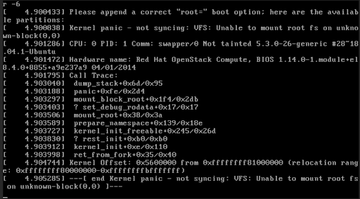

Guided solution (page 2)
Connect to the workstation VM’s console to access the instance’s console.
-
From GUI console of workstation, connect to workstation VM and get the instance’s console URL.
oc exec -n openstack openstackclient -- openstack console url show scenario-bfx022-vmSample output[student@workstation ~]$ oc exec -n openstack openstackclient -- openstack console url show scenario-bfx022-vm +----------+-----------------------------------------------------------------------------------------------------------------------------------------+ | Field | Value | +----------+-----------------------------------------------------------------------------------------------------------------------------------------+ | protocol | vnc | | type | novnc | | url | https://nova-novncproxy-cell1-public-openstack.apps.ocp4.example.com/vnc_lite.html?path=%3Ftoken%3D67f1b610-1716-4c82-ae3b-aee0afce8446 | +----------+-----------------------------------------------------------------------------------------------------------------------------------------+ [student@workstation ~]$
The command is to be run from a terminal within the GUI console of workstation VM. -
Click the link in the output of above command to access the instance’s console in a web browser from the workstation VM’s GUI console.
Upon accessing the console, you might get the "Kernel panic" boot failure message, indicating the VM was not successfully booted.
-
There could be something wrong with vm’s configuration. Use openstack server show to check details of the instance.
oc exec -n openstack openstackclient -- openstack server show scenario-bfx022-vm[student@workstation ~]$ oc exec -n openstack openstackclient -- openstack server show scenario-bfx022-vm . . . | flavor | m1.tiny (m1.tiny) . . .
Observe that flavor being used for the instance is not enough (m1.tiny with 64mb RAM).
-
List available flavors on the cluster.
oc exec -n openstack openstackclient -- openstack flavor listSample output[student@workstation ~]$ oc exec -n openstack openstackclient -- openstack flavor list +--------------------------------------+----------+-----+------+-----------+-------+-----------+ | ID | Name | RAM | Disk | Ephemeral | VCPUs | Is Public | +--------------------------------------+----------+-----+------+-----------+-------+-----------+ | 400fc6d4-4e07-4b93-800a-a252b469915e | m1.small | 512 | 1 | 0 | 1 | True | | 64d632e4-9227-484e-9cd0-a5789691b839 | tiny | 512 | 1 | 0 | 1 | True | | d8c5902e-dc31-4261-89d7-39a5b736fb03 | m1.tiny | 64 | 1 | 0 | 1 | True | +--------------------------------------+----------+-----+------+-----------+-------+-----------+
We have m1.medium flavor with better ram.
-
Change the flavor of the instance to use m1.medium.
oc exec -n openstack openstackclient -- openstack server resize --flavor m1.small scenario-bfx022-vm -
Observe the console url again and note the VM is now booted and is on login prompt.